Here are the cats, dogs and bunnies we have available for adoption
1 / 16
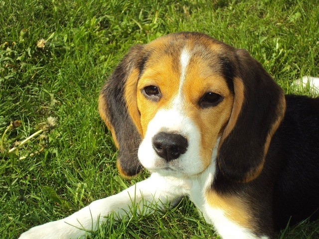
Rowdy ~ 1 Year Old Male
2 / 16
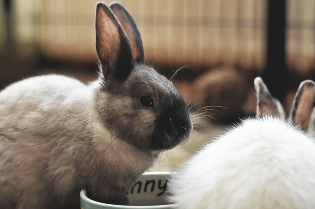
Snowy & Brownie are siblings & need to be adopted together.
They are around 6 months old.
3 / 16
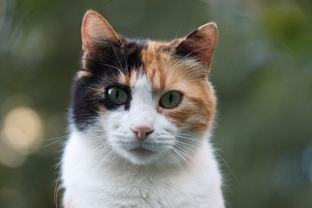
Calli the Calico is a frisky little girl. She would
be very comfortable in a home with children.
4 / 16
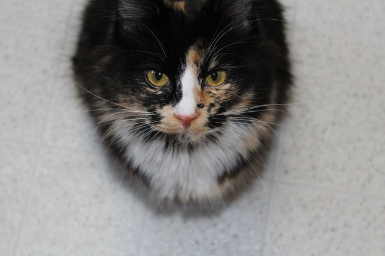
Finicky is a beautiful Calico. She is leary of dogs
so she might be happiest in a home with only her as the pet.
5 / 16
These cute kittens are named Tiger, Eenie, Meanie,
Miney, and Moe. They can be adopted separately or together.
6 / 16
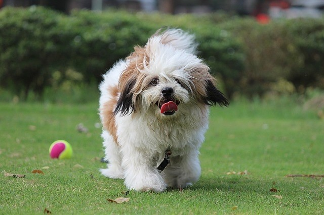
Snuffles is a very playful pooch. He would make
the best family pet with children and other animal playmates!
7 / 16
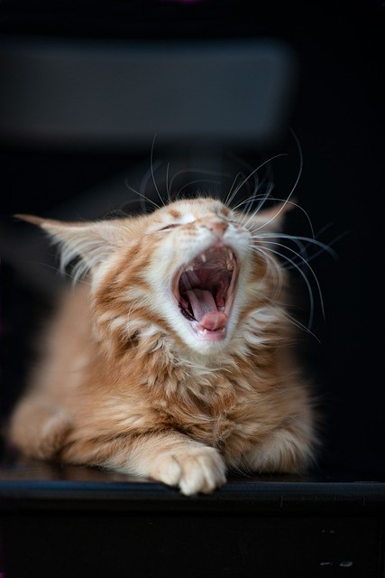
This is Sleepy; he yawns a lot and likes to lounge
around. Sleepy would be ideal for a laid back family.
8 / 16
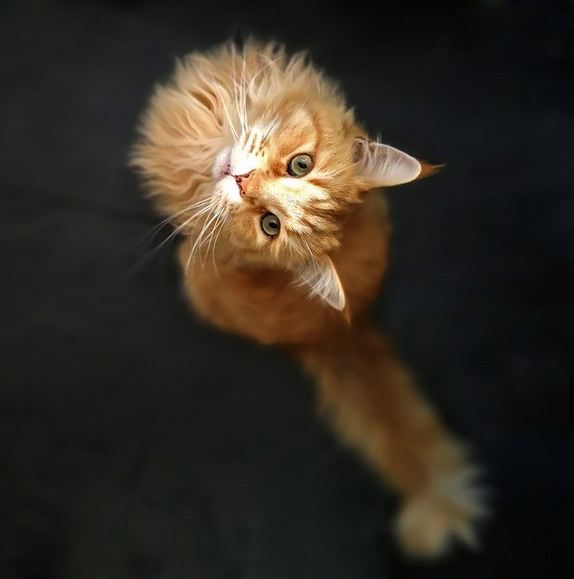
This Maine Coon's name is Pumpkin. He has very long hair
and is one of the largest domestic cats. If you are prepared to
lots of grooming than Pumpkin is a great choice!
9 / 16
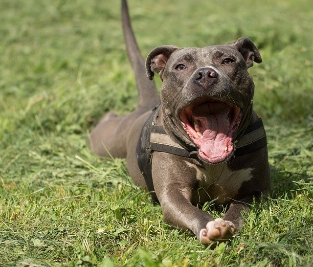
Meet Tiny; the pit bull! He is a bundle of love and thinks he
is a lap dog! If you need a loyal companion who will stick by your side through
thick and thin, then Tiny is your man!!
10 / 16
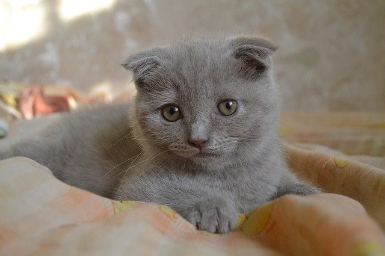
Meet Sylvia. She is a Scottish Fold. She is a little
skittish at first; but once she gets to know you, you will be best
friends forever!
11 / 16
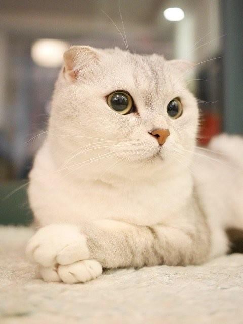
Snow White is a prissy little kitty.
She loves fancy toys and lots of attention.
12 / 16
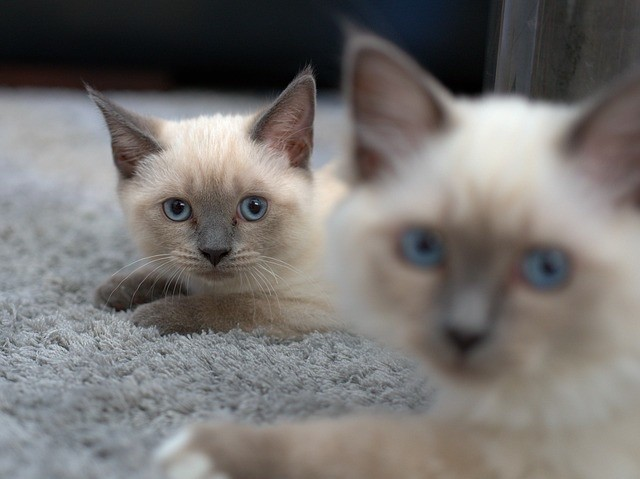
These two siamese come from the same litter.
Yukio and Zara are both females. Siamese like to have full run of the home
so if you are thinking of adopting a second cat, I would suggest
getting a different breed; although alone the siamese make great pets!
13 / 16
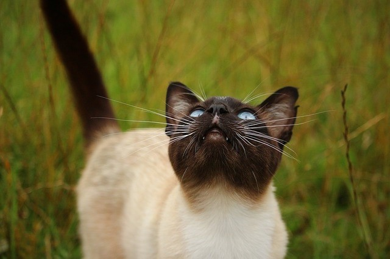
Jasmine loves to roam outdoors. She would be happier as a
mouse hunter than a fully indoor house cat. She might roam for a day or two
but she will always come back.
15 / 16
Meet Spanky! Spanky has the power to bark storms away. He is
one of the friendliest dogs in our shelter and would be fabulous if placed in a
home with lots of children!.
16 / 16
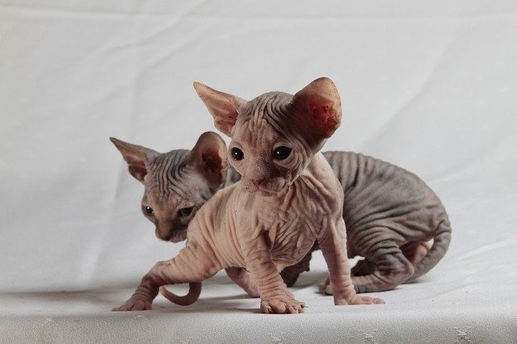
Renoir and Brissa are both female Sphinx kittens. They are
perfect for houeholds in which a family member is allergic to dander. Since
these cats are hairless, they have little to no dander and are able to be able to
be bathed quite easily which also reduces the risk of allergins. Renoir and Brissa
would make regal additions to your beautiful family!